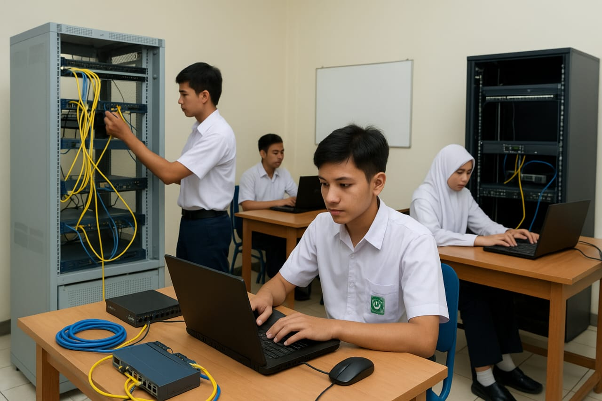
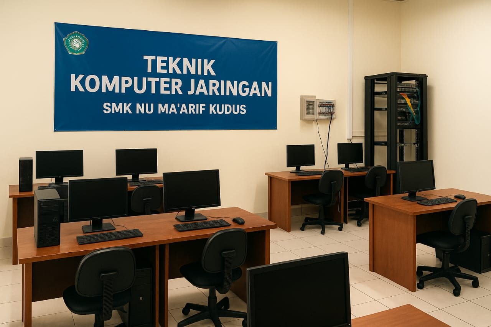
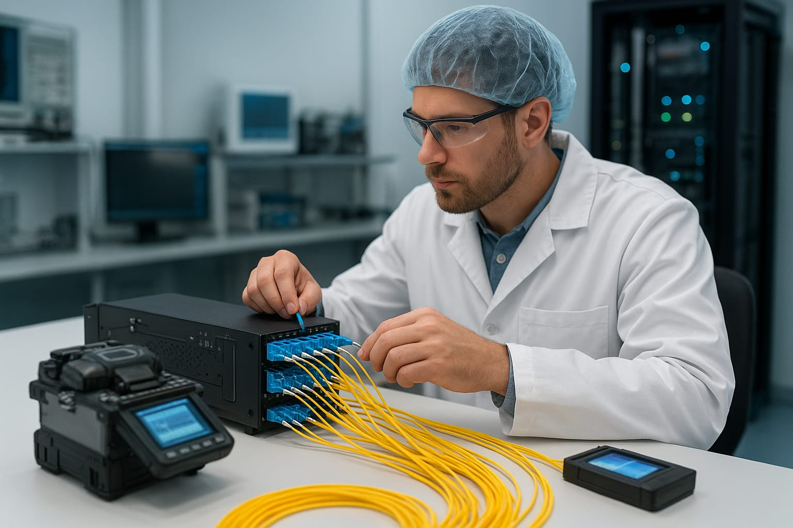

Galeri Foto




Teknik Komputer & Jaringan
Wali Kelas: Ibu Rusydina Husna
Jumlah Siswa: 35 siswa
Ruangan: Kelas X TKJ 2
| Hari | Mata Pelajaran |
|---|---|
| Senin | B Jawa, PIPAS, B Ind, Wali |
| Selasa | Mtk, PP, Inf |
| Rabu | PJOK, B Ind, B Ing |
| Kamis | DDJKT |
| Sabtu | PIPAS, Sejarah, Seni Budaya |
| Ahad | PAIBP, NU, B Ing |
Program Keahlian Teknik Komputer dan Jaringan (TKJ) di SMK NU Ma’arif Kudus dikembangkan sebagai upaya sekolah untuk menjawab kebutuhan dunia industri terhadap tenaga kerja yang kompeten di bidang teknologi informasi. Program ini mulai dirintis ketika perkembangan komputer, internet, dan jaringan komunikasi memasuki fase pertumbuhan pesat, sehingga sekolah memandang penting adanya jurusan yang fokus pada keterampilan instalasi, konfigurasi, serta pemeliharaan sistem jaringan. Pada masa awal pembentukannya, kegiatan pembelajaran masih didukung dengan fasilitas laboratorium yang sederhana. Seiring meningkatnya tuntutan kompetensi dan perkembangan kurikulum nasional, sekolah melakukan penguatan sarana melalui penambahan laboratorium komputer, laboratorium jaringan, perangkat server, serta peralatan pendukung instalasi jaringan. Pengembangan ini menjadi fondasi penting bagi peningkatan mutu pembelajaran berbasis praktik.
Visi: Mewujudkan program keahlian Teknik Komputer dan Jaringan yang unggul, kompeten, dan berdaya saing dalam teknologi informasi serta mampu memenuhi kebutuhan dunia kerja yang terus berkembang.
Misi: 1. Menyelenggarakan pendidikan dan pelatihan berbasis kompetensi di bidang komputer dan jaringan. 2. Mengembangkan keterampilan peserta didik dalam perakitan komputer, administrasi jaringan, serta pemeliharaan sistem. 3. Meningkatkan kemampuan peserta didik melalui praktik industri dan kerja sama dengan dunia usaha dan dunia industri.
Tujuan: Jurusan TKJ bertujuan menghasilkan lulusan yang memiliki kemampuan teknis dalam instalasi, konfigurasi, dan perawatan jaringan komputer; memahami perkembangan teknologi informasi modern; serta mampu beradaptasi dengan kebutuhan industri maupun dunia kerja secara profesional.